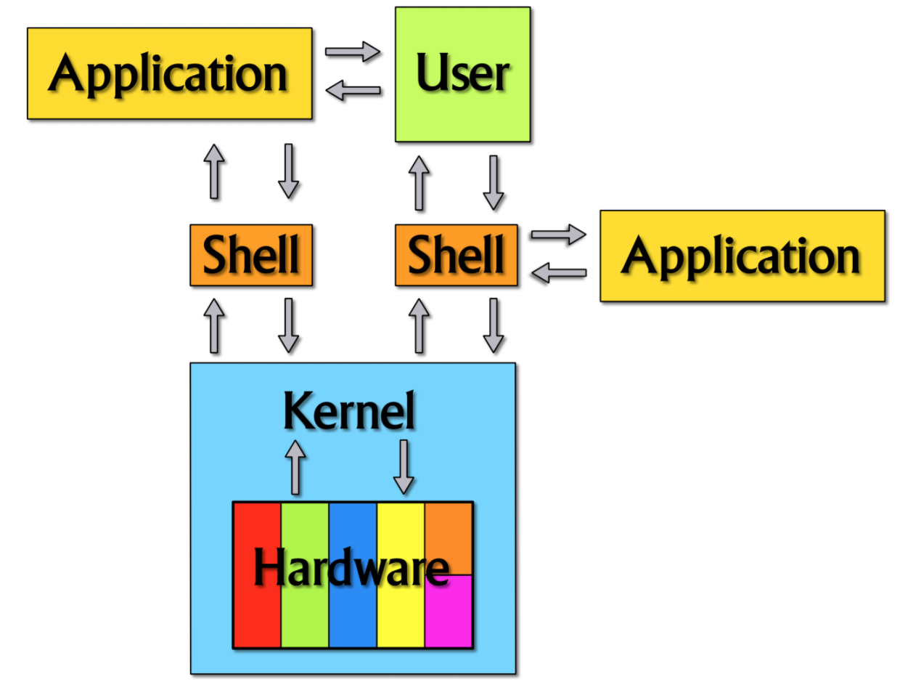

Az operációs rendszer olyan programok gyűjteménye, amelyek elősegítik a számítógép hardverének könnyű használatát. A programok és a felhasználó számára is egységes kezdőfelületet biztosít.
Feladatai közé tartozik a programok betöltése, futtatása, a perifériák kezelése, kapcsolattartás a felhasználóval, a parancsok értelmezése és végrehajtása, a hibakezelés és az adatvédelem.
Az operációs rendszereket három részre lehet bontani:
| kernel | shell | API | |
| más néven: | rendszermag | rendszerhéj | alkalmazásprogramozási felület |
| feladata: | ki- és bemeneti eszközök kezelése, a memória-hozzáférés biztosítása, a processzor idejének elosztása, a háttértárolók kezelése, a fájlrendszerek kezelése | felhasználóval való kapcsolattartás, az alkalmazások futásának kezelése | dokumentálja egy program azon eljárásait valamint azok használatát amelyeket más programokban felhasználnak |
